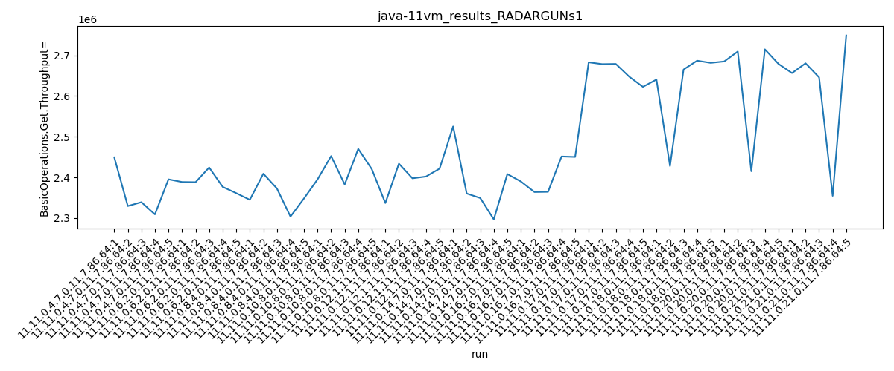

java-11 RADARGUNs1
Context at bottom
/home/jvanek/git/benchmarks-in-nested-virtualisation-toolchain/final_results/vm_results/vm_results_RADARGUNs1
java-11
RADARGUNs1
vm_results_RADARGUNs1
- vm_results_RADARGUNs1 - throughput get
- vm_results_RADARGUNs1 - throughput put
- vm_results_RADARGUNs1 - response mean time get
- vm_results_RADARGUNs1 - response mean time put
vm_results_RADARGUNs1 - throughput get
Expected number of java-11 JDKs: 11
1st avgmed_alljdks_metric:
/home/jvanek/git/benchmarks-in-nested-virtualisation-toolchain/final_results/result_processing.py /home/jvanek/git/benchmarks-in-nested-virtualisation-toolchain/final_results/vm_results/vm_results_RADARGUNs1 BasicOperations.Get.Throughput= False
values: [2449285, 2329383, 2338917, 2308972, 2395099, 2388496, 2388079, 2424201, 2376561, 2361118, 2344816, 2408864, 2372659, 2303561, 2348213, 2395088, 2452206, 2382540, 2469913, 2420158, 2336738, 2433584, 2397569, 2402004, 2421420, 2525050, 2360246, 2349138, 2296720, 2408034, 2389714, 2363871, 2364356, 2451254, 2450100, 2682630, 2678225, 2678690, 2647133, 2622418, 2640262, 2427829, 2664922, 2686638, 2681318, 2684795, 2709258, 2414879, 2714592, 2678886, 2656245, 2680266, 2645707, 2354484, 2748843]

Expected number of iterations: 5
final number of values: 55 out of 55
Pass rate: 100.0%
values: (2296720, 2748843, 2478289.9454545453, 2420158)

** accuracy from all jdks and runs
more is better
MIN: 2296720
MAX: 2748843
AVG: 2478289.9454545453
MED: 2420158
Relative differences 1:
MIN-MAX: 16.0 %
MIN-AVG: 7.0 %
MIN-MED: 5.0 %
MAX-MIN: -20.0 %
MAX-AVG: -11.0 %
MAX-MED: -14.0 %
AVG-MED: -2.0 %
stored to java-11.properties. sort | uniq that!
2nd avgmed_by_jdk_metric:
values: [2364331.2, 2387691.0, 2355622.6, 2423981.0, 2398263.0, 2387837.6, 2403859.0, 2661819.2, 2620193.8, 2640482.0, 2617109.0]

values: [2338917, 2388079, 2348213, 2420158, 2402004, 2360246, 2389714, 2678225, 2664922, 2684795, 2656245]

values: (2355622.6, 2661819.2, 2478289.9454545453, 2403859.0)
values: (2338917, 2684795, 2484683.4545454546, 2402004)

** accuracy from all jdks where runs were avged
more is better
MIN: 2355622.6
MAX: 2661819.2
AVG: 2478289.9454545453
MED: 2403859.0
Relative differences 1:
MIN-MAX: 12.0 %
MIN-AVG: 5.0 %
MIN-MED: 2.0 %
MAX-MIN: -13.0 %
MAX-AVG: -7.0 %
MAX-MED: -11.0 %
AVG-MED: -3.0 %
stored to java-11.properties. sort | uniq that!
** accuracy from all jdks where runs were medianed
more is better
MIN: 2338917
MAX: 2684795
AVG: 2484683.4545454546
MED: 2402004
Relative differences 1:
MIN-MAX: 13.0 %
MIN-AVG: 6.0 %
MIN-MED: 3.0 %
MAX-MIN: -15.0 %
MAX-AVG: -8.0 %
MAX-MED: -12.0 %
AVG-MED: -3.0 %
stored to java-11.properties. sort | uniq that!
vm_results_RADARGUNs1 - throughput put
Expected number of java-11 JDKs: 11
1st avgmed_alljdks_metric:
/home/jvanek/git/benchmarks-in-nested-virtualisation-toolchain/final_results/result_processing.py /home/jvanek/git/benchmarks-in-nested-virtualisation-toolchain/final_results/vm_results/vm_results_RADARGUNs1 BasicOperations.Put.Throughput= False
values: [612328, 582359, 584766, 577219, 598722, 597100, 597007, 606067, 594079, 590293, 586215, 602240, 593228, 575898, 587088, 598757, 613097, 595613, 617451, 605098, 584127, 608419, 599300, 600500, 605387, 631221, 590072, 587289, 574159, 602060, 597469, 590981, 591095, 612774, 612447, 670702, 669577, 669738, 661793, 655556, 660106, 606979, 666194, 671672, 670284, 671199, 677323, 603742, 678646, 669698, 664010, 670068, 661440, 588559, 687211]

Expected number of iterations: 5
final number of values: 55 out of 55
Pass rate: 100.0%
values: (574159, 687211, 619571.3090909091, 605098)

** accuracy from all jdks and runs
more is better
MIN: 574159
MAX: 687211
AVG: 619571.3090909091
MED: 605098
Relative differences 1:
MIN-MAX: 16.0 %
MIN-AVG: 7.0 %
MIN-MED: 5.0 %
MAX-MIN: -20.0 %
MAX-AVG: -11.0 %
MAX-MED: -14.0 %
AVG-MED: -2.0 %
stored to java-11.properties. sort | uniq that!
2nd avgmed_by_jdk_metric:
values: [591078.8, 596909.2, 588933.8, 606003.2, 599546.6, 596960.2, 600953.2, 665473.2, 655047.0, 660121.6, 654257.6]

values: [584766, 597007, 587088, 605098, 600500, 590072, 597469, 669577, 666194, 671199, 664010]

values: (588933.8, 665473.2, 619571.3090909091, 600953.2)
values: (584766, 671199, 621180.0, 600500)

** accuracy from all jdks where runs were avged
more is better
MIN: 588933.8
MAX: 665473.2
AVG: 619571.3090909091
MED: 600953.2
Relative differences 1:
MIN-MAX: 12.0 %
MIN-AVG: 5.0 %
MIN-MED: 2.0 %
MAX-MIN: -13.0 %
MAX-AVG: -7.0 %
MAX-MED: -11.0 %
AVG-MED: -3.0 %
stored to java-11.properties. sort | uniq that!
** accuracy from all jdks where runs were medianed
more is better
MIN: 584766
MAX: 671199
AVG: 621180.0
MED: 600500
Relative differences 1:
MIN-MAX: 13.0 %
MIN-AVG: 6.0 %
MIN-MED: 3.0 %
MAX-MIN: -15.0 %
MAX-AVG: -8.0 %
MAX-MED: -12.0 %
AVG-MED: -3.0 %
stored to java-11.properties. sort | uniq that!
vm_results_RADARGUNs1 - response mean time get
Expected number of java-11 JDKs: 11
1st avgmed_alljdks_metric:
/home/jvanek/git/benchmarks-in-nested-virtualisation-toolchain/final_results/result_processing.py /home/jvanek/git/benchmarks-in-nested-virtualisation-toolchain/final_results/vm_results/vm_results_RADARGUNs1 BasicOperations.Get.ResponseTimeMean True
values: [1480, 1497, 1521, 1550, 1481, 1480, 1467, 1452, 1451, 1531, 1560, 1449, 1443, 1551, 1503, 1522, 1467, 1509, 1464, 1440, 1427, 1447, 1477, 1491, 1397, 1456, 1462, 1483, 1505, 1444, 1526, 1498, 1442, 1446, 1482, 1376, 1367, 1330, 1369, 1373, 1346, 1397, 1363, 1348, 1378, 1383, 1333, 1428, 1334, 1401, 1321, 1381, 1410, 1408, 1394]

Expected number of iterations: 5
final number of values: 55 out of 55
Pass rate: 100.0%
values: (1321, 1560, 1440.7454545454545, 1447)

** accuracy from all jdks and runs
more is worse
MIN: 1560
MAX: 1321
AVG: 1440.7454545454545
MED: 1447
Relative differences 1:
MIN-MAX: 18.0 %
MIN-AVG: 8.0 %
MIN-MED: 8.0 %
MAX-MIN: -15.0 %
MAX-AVG: -8.0 %
MAX-MED: -9.0 %
AVG-MED: -0.0 %
stored to java-11.properties. sort | uniq that!
2nd avgmed_by_jdk_metric:
values: [1505.8, 1476.2, 1501.2, 1480.4, 1447.8, 1470.0, 1478.8, 1363.0, 1366.4, 1375.8, 1382.8]

values: [1497, 1467, 1503, 1467, 1447, 1462, 1482, 1369, 1363, 1383, 1394]

values: (1363.0, 1505.8, 1440.7454545454545, 1470.0)
values: (1363, 1503, 1439.4545454545455, 1462)

** accuracy from all jdks where runs were avged
more is worse
MIN: 1505.8
MAX: 1363.0
AVG: 1440.7454545454545
MED: 1470.0
Relative differences 1:
MIN-MAX: 10.0 %
MIN-AVG: 5.0 %
MIN-MED: 2.0 %
MAX-MIN: -9.0 %
MAX-AVG: -5.0 %
MAX-MED: -7.0 %
AVG-MED: -2.0 %
stored to java-11.properties. sort | uniq that!
** accuracy from all jdks where runs were medianed
more is worse
MIN: 1503
MAX: 1363
AVG: 1439.4545454545455
MED: 1462
Relative differences 1:
MIN-MAX: 10.0 %
MIN-AVG: 4.0 %
MIN-MED: 3.0 %
MAX-MIN: -9.0 %
MAX-AVG: -5.0 %
MAX-MED: -7.0 %
AVG-MED: -2.0 %
stored to java-11.properties. sort | uniq that!
vm_results_RADARGUNs1 - response mean time put
Expected number of java-11 JDKs: 11
1st avgmed_alljdks_metric:
/home/jvanek/git/benchmarks-in-nested-virtualisation-toolchain/final_results/result_processing.py /home/jvanek/git/benchmarks-in-nested-virtualisation-toolchain/final_results/vm_results/vm_results_RADARGUNs1 BasicOperations.Put.ResponseTimeMean True
values: [6928, 6905, 6949, 6965, 6786, 6873, 6832, 6742, 6889, 6997, 7038, 6657, 6956, 7051, 7026, 6556, 6720, 6913, 6861, 6705, 6741, 6801, 6865, 6870, 6698, 6585, 7009, 6814, 6728, 6745, 6792, 6718, 7477, 6584, 6959, 5468, 5556, 5652, 5657, 5965, 5556, 5442, 5539, 5641, 5468, 5555, 5398, 5570, 5377, 5444, 5499, 5437, 5573, 5656, 5462]
Expected number of iterations: 5
final number of values: 55 out of 55
Pass rate: 100.0%
values: (5377, 7477, 6375.454545454545, 6720)

** accuracy from all jdks and runs
more is worse
MIN: 7477
MAX: 5377
AVG: 6375.454545454545
MED: 6720
Relative differences 1:
MIN-MAX: 39.0 %
MIN-AVG: 17.0 %
MIN-MED: 11.0 %
MAX-MIN: -28.0 %
MAX-AVG: -16.0 %
MAX-MED: -20.0 %
AVG-MED: -5.0 %
stored to java-11.properties. sort | uniq that!
2nd avgmed_by_jdk_metric:
values: [6906.6, 6866.6, 6945.6, 6751.0, 6795.0, 6776.2, 6906.0, 5659.6, 5529.2, 5468.8, 5525.4]

values: [6928, 6873, 7026, 6720, 6801, 6745, 6792, 5652, 5539, 5444, 5499]

values: (5468.8, 6945.6, 6375.454545454545, 6776.2)
values: (5444, 7026, 6365.363636363636, 6745)

** accuracy from all jdks where runs were avged
more is worse
MIN: 6945.6
MAX: 5468.8
AVG: 6375.454545454545
MED: 6776.2
Relative differences 1:
MIN-MAX: 27.0 %
MIN-AVG: 9.0 %
MIN-MED: 2.0 %
MAX-MIN: -21.0 %
MAX-AVG: -14.0 %
MAX-MED: -19.0 %
AVG-MED: -6.0 %
stored to java-11.properties. sort | uniq that!
** accuracy from all jdks where runs were medianed
more is worse
MIN: 7026
MAX: 5444
AVG: 6365.363636363636
MED: 6745
Relative differences 1:
MIN-MAX: 29.0 %
MIN-AVG: 10.0 %
MIN-MED: 4.0 %
MAX-MIN: -23.0 %
MAX-AVG: -14.0 %
MAX-MED: -19.0 %
AVG-MED: -6.0 %
stored to java-11.properties. sort | uniq that!
/home/jvanek/git/benchmarks-in-nested-virtualisation-toolchain/final_results/vm_results/vm_results_RADARGUNs3
java-11
RADARGUNs1
/home/jvanek/git/benchmarks-in-nested-virtualisation-toolchain/final_results/vm_results/vm_results_DACAPO
java-11
RADARGUNs1
/home/jvanek/git/benchmarks-in-nested-virtualisation-toolchain/final_results/vm_results/vm_results_J2DBENCH
java-11
RADARGUNs1
/home/jvanek/git/benchmarks-in-nested-virtualisation-toolchain/final_results/vm_results/vm_results_SPECJBB
java-11
RADARGUNs1
/home/jvanek/git/benchmarks-in-nested-virtualisation-toolchain/final_results/vm_results/vm_results_JMH
java-11
RADARGUNs1
pass rates:
vm_results_RADARGUNs1=100.0%
Context:
- vm_results
- RADARGUNs1